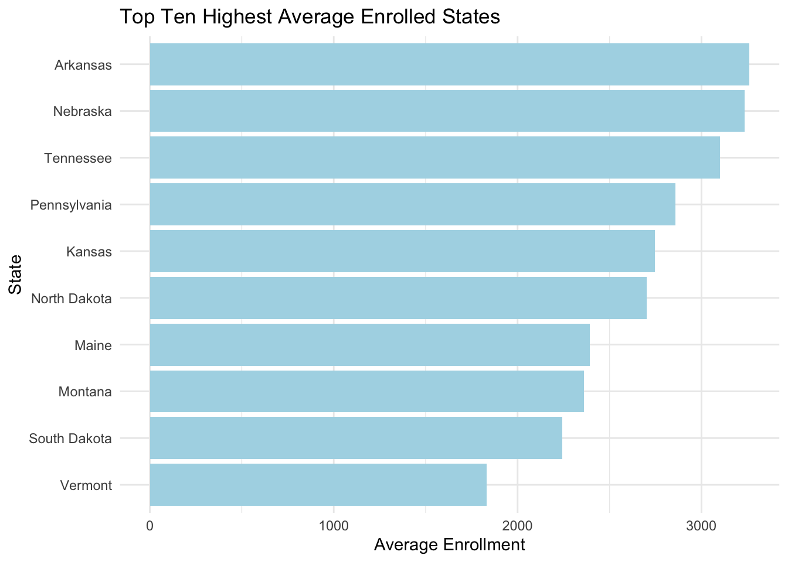

# load packages
library(tidyverse) # wrangling, plots etc.
library(GGally) # paired plots
library(skimr) # data summary
library(patchwork) # for combining plots
library(RColorBrewer) # for plot colors
library(sf)
library(stringr)
library(dplyr)
library(plotly)
# set plot theme
theme_set(theme_minimal(base_size = 12))
tuition_cost <- read_csv("../data/tuition_cost.csv")
tuition_income <- read_csv("../data/tuition_income.csv")
salary_potential <- read_csv("../data/salary_potential.csv")
historical_tuition <- read_csv("../data/historical_tuition.csv")
diversity_school <- read_csv("../data/diversity_school.csv")
states_df <- map_data("state")Exploratory Data Analysis
tuition_cost# A tibble: 2,973 × 10
name state state_code type degree_length room_and_board in_state_tuition
<chr> <chr> <chr> <chr> <chr> <dbl> <dbl>
1 Aaniiih… Mont… MT Publ… 2 Year NA 2380
2 Abilene… Texas TX Priv… 4 Year 10350 34850
3 Abraham… Geor… GA Publ… 2 Year 8474 4128
4 Academy… Minn… MN For … 2 Year NA 17661
5 Academy… Cali… CA For … 4 Year 16648 27810
6 Adams S… Colo… CO Publ… 4 Year 8782 9440
7 Adelphi… New … NY Priv… 4 Year 16030 38660
8 Adirond… New … NY Publ… 2 Year 11660 5375
9 Adrian … Mich… MI Priv… 4 Year 11318 37087
10 Advance… Virg… VA For … 2 Year NA 13680
# ℹ 2,963 more rows
# ℹ 3 more variables: in_state_total <dbl>, out_of_state_tuition <dbl>,
# out_of_state_total <dbl>tuition_income# A tibble: 295,098 × 7
name state total_price year campus net_cost income_lvl
<chr> <chr> <dbl> <dbl> <chr> <dbl> <chr>
1 Piedmont International Un… NC 20174 2016 On Ca… 11475 0 to 30,0…
2 Piedmont International Un… NC 20174 2016 On Ca… 11451 30,001 to…
3 Piedmont International Un… NC 20174 2016 On Ca… 16229 48_001 to…
4 Piedmont International Un… NC 20174 2016 On Ca… 15592 75,001 to…
5 Piedmont International Un… NC 20514 2017 On Ca… 11668. 0 to 30,0…
6 Piedmont International Un… NC 20514 2017 On Ca… 11644. 30,001 to…
7 Piedmont International Un… NC 20514 2017 On Ca… 16503. 48_001 to…
8 Piedmont International Un… NC 20514 2017 On Ca… 15855. 75,001 to…
9 Piedmont International Un… NC 20514 2017 On Ca… 0 Over 110,…
10 Piedmont International Un… NC 20829 2018 On Ca… 11848. 0 to 30,0…
# ℹ 295,088 more rowssalary_potential# A tibble: 925 × 7
rank name state_name early_career_pay mid_career_pay make_world_better_pe…¹
<dbl> <chr> <chr> <dbl> <dbl> <dbl>
1 1 Univ… Alabama 71000 127000 57
2 2 Aubu… Alabama 67500 123300 50
3 3 Spri… Alabama 56900 123100 52
4 4 The … Alabama 65600 113100 50
5 5 Birm… Alabama 64200 111600 40
6 6 Samf… Alabama 60000 104600 58
7 7 Tusk… Alabama 67700 101600 65
8 8 Herz… Alabama 59100 101100 NA
9 8 Univ… Alabama 59400 101100 56
10 10 Alab… Alabama 62800 98400 65
# ℹ 915 more rows
# ℹ abbreviated name: ¹make_world_better_percent
# ℹ 1 more variable: stem_percent <dbl>historical_tuition# A tibble: 270 × 4
type year tuition_type tuition_cost
<chr> <chr> <chr> <dbl>
1 All Institutions 1985-86 All Constant 10893
2 All Institutions 1985-86 4 Year Constant 12274
3 All Institutions 1985-86 2 Year Constant 7508
4 All Institutions 1985-86 All Current 4885
5 All Institutions 1985-86 4 Year Current 5504
6 All Institutions 1985-86 2 Year Current 3367
7 All Institutions 1995-96 All Constant 13822
8 All Institutions 1995-96 4 Year Constant 16224
9 All Institutions 1995-96 2 Year Constant 7421
10 All Institutions 1995-96 All Current 8800
# ℹ 260 more rowsdiversity_school# A tibble: 50,655 × 5
name total_enrollment state category enrollment
<chr> <dbl> <chr> <chr> <dbl>
1 University of Phoenix-Arizona 195059 Arizona Women 134722
2 University of Phoenix-Arizona 195059 Arizona American I… 876
3 University of Phoenix-Arizona 195059 Arizona Asian 1959
4 University of Phoenix-Arizona 195059 Arizona Black 31455
5 University of Phoenix-Arizona 195059 Arizona Hispanic 13984
6 University of Phoenix-Arizona 195059 Arizona Native Haw… 1019
7 University of Phoenix-Arizona 195059 Arizona White 58209
8 University of Phoenix-Arizona 195059 Arizona Two Or Mor… 19039
9 University of Phoenix-Arizona 195059 Arizona Unknown 65163
10 University of Phoenix-Arizona 195059 Arizona Non-Reside… 3355
# ℹ 50,645 more rowsIs there a best state to go to college/university
# Calculate the average early career salary by state
average_early_career_pay <- salary_potential %>%
group_by(state_name) %>%
summarize(avg_early_career_pay = mean(early_career_pay, na.rm = TRUE))
# Calculate the average early career salary by state
average_mid_career_pay <- salary_potential %>%
group_by(state_name) %>%
summarize(avg_mid_career_pay = mean(mid_career_pay, na.rm = TRUE))
# Create a bar plot
avg_early_pay_plot <- ggplot(average_early_career_pay, aes(x = state_name, y = avg_early_career_pay)) +
geom_bar(stat = "identity", fill = "lightblue") +
labs(title = "Average Early Career Salaries by State", x = "State", y = "Average Early Career Salary") +
theme_minimal() +
coord_flip()
# Create a bar plot
avg_mid_pay_plot <- ggplot(average_mid_career_pay, aes(x = state_name, y = avg_mid_career_pay)) +
geom_bar(stat = "identity", fill = "lightblue") +
labs(title = "Average Mid Career Salaries by State", x = "State", y = "Average Mid Career Salary") +
theme_minimal() +
coord_flip()
avg_early_pay_plotavg_mid_pay_plot# Standardize state names
states_df <- states_df %>%
mutate(region = tolower(gsub("[_ ]", "", region)))
salary_potential_cleaned <- salary_potential %>%
mutate(state_name = tolower(gsub("[_ ]", "", state_name))) %>%
mutate(state_name = gsub("-", "", state_name))
# Left join the data sets, keeping all state boundaries
merged_data <- left_join(states_df, salary_potential_cleaned, by = c("region" = "state_name"))Warning in left_join(states_df, salary_potential_cleaned, by = c(region = "state_name")): Detected an unexpected many-to-many relationship between `x` and `y`.
ℹ Row 1 of `x` matches multiple rows in `y`.
ℹ Row 1 of `y` matches multiple rows in `x`.
ℹ If a many-to-many relationship is expected, set `relationship =
"many-to-many"` to silence this warning.# Create the choropleth map
entry_pay_chloropleth <-merged_data %>%
ggplot() +
geom_polygon(aes(long, lat, group = group, fill = early_career_pay), color = "darkgray") +
scale_fill_gradient(low = "lightblue", high = "darkblue", labels = scales::comma) + # Use the 'comma' function
labs(title = "Early Career Pay by State", fill = "Early Career Pay") +
theme_minimal()
mid_pay_chloropleth <- merged_data %>%
ggplot() +
geom_polygon(aes(long, lat, group = group, fill = mid_career_pay), color = "darkgray") +
scale_fill_gradient(low = "lightblue", high = "darkblue", labels = scales::comma) + # Use the 'comma' function
labs(title = "Mid Career Pay by State", fill = "Mid Career Pay") +
theme_minimal()
entry_pay_chloroplethmid_pay_chloropleth# Sort the data frame to find the top ten states with the highest average early career salaries
top_ten_early <- head(arrange(average_early_career_pay, desc(avg_early_career_pay)), 10)
# Sort the data frame to find the top ten states with the highest average mid career salaries
top_ten_mid <- head(arrange(average_mid_career_pay, desc(avg_mid_career_pay)), 10)
# Create a bar plot for the top ten early career salaries
top_ten_early_plot <- top_ten_early %>%
ggplot(aes(x = reorder(state_name, avg_early_career_pay), y = avg_early_career_pay)) +
geom_bar(stat = "identity", fill = "lightblue") +
labs(title = "Top Ten States with Highest Average Early Career Salaries",
x = "State", y = "Average Early Career Salary") +
theme_minimal() +
coord_flip()
# Create a bar plot for the top ten mid career salaries
top_ten_mid_plot <- top_ten_mid %>%
ggplot(aes(x = reorder(state_name, avg_mid_career_pay), y = avg_mid_career_pay)) +
geom_bar(stat = "identity", fill = "lightblue") +
labs(title = "Top Ten States with Highest Average Mid Career Salaries",
x = "State", y = "Average Mid Career Salary") +
theme_minimal() +
coord_flip()
top_ten_early_plottop_ten_mid_plot# Sort the data frame to find the worst ten states with the lowest average early career salaries
worst_ten_early <- head(arrange(average_early_career_pay, avg_early_career_pay), 10)
# Sort the data frame to find the worst ten states with the lowest average mid career salaries
worst_ten_mid <- head(arrange(average_mid_career_pay, avg_mid_career_pay), 10)
# Create a bar plot for the worst ten early career salaries
worst_ten_early_plot <- worst_ten_early %>%
ggplot(aes(x = reorder(state_name, -avg_early_career_pay), y = avg_early_career_pay)) +
geom_bar(stat = "identity", fill = "lightpink") +
labs(title = "Worst Ten States with Lowest Average Early Career Salaries",
x = "State", y = "Average Early Career Salary") +
theme_minimal() +
coord_flip()
# Create a bar plot for the worst ten mid career salaries
worst_ten_mid_plot <- worst_ten_mid %>%
ggplot(aes(x = reorder(state_name, -avg_mid_career_pay), y = avg_mid_career_pay)) +
geom_bar(stat = "identity", fill = "lightpink") +
labs(title = "Worst Ten States with Lowest Average Mid Career Salaries",
x = "State", y = "Average Mid Career Salary") +
theme_minimal() +
coord_flip()
worst_ten_early_plot
worst_ten_mid_plot# Calculate the average early career salary and mid career salary by state
average_salaries <- salary_potential %>%
group_by(state_name) %>%
summarize(
avg_early_career_pay = mean(early_career_pay, na.rm = TRUE),
avg_mid_career_pay = mean(mid_career_pay, na.rm = TRUE)
) %>%
mutate(avg_pay = (avg_early_career_pay + avg_mid_career_pay) / 2)
# Define a mapping between state abbreviations and full state names
state_mapping <- data.frame(
state_abbrev = c("AL", "AK", "AZ", "AR", "CA", "CO", "CT", "DE", "FL", "GA", "HI", "ID", "IL", "IN", "IA", "KS", "KY", "LA", "ME", "MD", "MA", "MI", "MN", "MS", "MO", "MT", "NE", "NV", "NH", "NJ", "NM", "NY", "NC", "ND", "OH", "OK", "OR", "PA", "RI", "SC", "SD", "TN", "TX", "UT", "VT", "VA", "WA", "WV", "WI", "WY"),
state_name = c("Alabama", "Alaska", "Arizona", "Arkansas", "California", "Colorado", "Connecticut", "Delaware", "Florida", "Georgia", "Hawaii", "Idaho", "Illinois", "Indiana", "Iowa", "Kansas", "Kentucky", "Louisiana", "Maine", "Maryland", "Massachusetts", "Michigan", "Minnesota", "Mississippi", "Missouri", "Montana", "Nebraska", "Nevada", "New-Hampshire", "New-Jersey", "New-Mexico", "New-York", "North-Carolina", "North-Dakota", "Ohio", "Oklahoma", "Oregon", "Pennsylvania", "Rhode-Island", "South-Carolina", "South-Dakota", "Tennessee", "Texas", "Utah", "Vermont", "Virginia", "Washington", "West-Virginia", "Wisconsin", "Wyoming")
)
# Merge the state_mapping with school_data to get full state names
tuition_income_cleaned <- tuition_income %>%
left_join(state_mapping, by = c("state" = "state_abbrev"))
# Merge the tuition_income_cleaned and average_salaries data frames by the "state_name" column
combined_data <- tuition_income_cleaned %>%
inner_join(average_salaries, by = "state_name")
# Check data set
combined_data# A tibble: 294,173 × 11
name state total_price year campus net_cost income_lvl state_name
<chr> <chr> <dbl> <dbl> <chr> <dbl> <chr> <chr>
1 Piedmont Inter… NC 20174 2016 On Ca… 11475 0 to 30,0… North-Car…
2 Piedmont Inter… NC 20174 2016 On Ca… 11451 30,001 to… North-Car…
3 Piedmont Inter… NC 20174 2016 On Ca… 16229 48_001 to… North-Car…
4 Piedmont Inter… NC 20174 2016 On Ca… 15592 75,001 to… North-Car…
5 Piedmont Inter… NC 20514 2017 On Ca… 11668. 0 to 30,0… North-Car…
6 Piedmont Inter… NC 20514 2017 On Ca… 11644. 30,001 to… North-Car…
7 Piedmont Inter… NC 20514 2017 On Ca… 16503. 48_001 to… North-Car…
8 Piedmont Inter… NC 20514 2017 On Ca… 15855. 75,001 to… North-Car…
9 Piedmont Inter… NC 20514 2017 On Ca… 0 Over 110,… North-Car…
10 Piedmont Inter… NC 20829 2018 On Ca… 11848. 0 to 30,0… North-Car…
# ℹ 294,163 more rows
# ℹ 3 more variables: avg_early_career_pay <dbl>, avg_mid_career_pay <dbl>,
# avg_pay <dbl># Group data by state and calculate the average total price and average pay
state_avg_data <- combined_data %>%
group_by(state_name) %>%
summarize(avg_total_price = mean(total_price),
avg_avg_pay = mean(avg_pay))
# Create a scatter plot of average net cost vs. average pay by state
state_avg_plot <- state_avg_data %>%
ggplot(aes(x = avg_total_price, y = avg_avg_pay, text = state_name)) +
geom_point(aes(color = state_name), size = 3) +
labs(title = "Average Total Price Vs. Average Pay by State",
x = "Average Total Price",
y = "Average Pay") +
theme_minimal() +
scale_color_discrete(guide = FALSE) # Remove legend for state names
# Convert ggplot to a plotly object and customize the tooltip labels
state_avg_plotly <- ggplotly(state_avg_plot, tooltip = "text", name = "")Warning: The `guide` argument in `scale_*()` cannot be `FALSE`. This was deprecated in
ggplot2 3.3.4.
ℹ Please use "none" instead.
ℹ The deprecated feature was likely used in the plotly package.
Please report the issue at <https://github.com/plotly/plotly.R/issues>.# Print the interactive plot
print(state_avg_plotly)# Group data by state and calculate the average net cost and average pay
state_avg_data2 <- combined_data %>%
group_by(state_name) %>%
summarize(avg_net_cost = mean(net_cost),
avg_avg_pay = mean(avg_pay))
# Create a scatter plot of average net cost vs. average pay by state
state_avg_plot <- state_avg_data2 %>%
ggplot(aes(x = avg_net_cost, y = avg_avg_pay, text = state_name)) +
geom_point(aes(color = state_name), size = 3) +
labs(title = "Average Net Cost Vs. Average Pay by State",
x = "Average Net Cost",
y = "Average Pay") +
theme_minimal() +
scale_color_discrete(guide = FALSE) # Remove legend for state names
# Convert ggplot to a plotly object and customize the tooltip labels
state_avg_plotly <- ggplotly(state_avg_plot, tooltip = "text", name = "")
# Print the interactive plot
print(state_avg_plotly)
state_avg_data# A tibble: 50 × 3
state_name avg_total_price avg_avg_pay
<chr> <dbl> <dbl>
1 Alabama 22545. 76738
2 Alaska 23812. 88883.
3 Arizona 23489. 83686.
4 Arkansas 22523. 73758.
5 California 34518. 116026
6 Colorado 27020. 88372.
7 Connecticut 36801. 94792.
8 Delaware 30477. 79640
9 Florida 29389. 87152
10 Georgia 26229. 82920
# ℹ 40 more rowsstate_avg_data2# A tibble: 50 × 3
state_name avg_net_cost avg_avg_pay
<chr> <dbl> <dbl>
1 Alabama 13878. 76738
2 Alaska 12417. 88883.
3 Arizona 14820. 83686.
4 Arkansas 12363. 73758.
5 California 18257. 116026
6 Colorado 17252. 88372.
7 Connecticut 19258. 94792.
8 Delaware 18608. 79640
9 Florida 17522. 87152
10 Georgia 15512. 82920
# ℹ 40 more rowsdiversity_school_cleaned <- diversity_school[!is.na(diversity_school$state), ]
# Create a bar plot of total enrollment by state
enrollment_plot <- diversity_school_cleaned %>%
ggplot(aes(x = state, y = total_enrollment)) +
geom_bar(stat = "identity", fill = "lightblue") +
labs(title = "Total Enrollment in Universities by State",
x = "State", y = "Total Enrollment") +
theme_minimal() +
coord_flip() +
scale_y_continuous(labels = scales::comma) # Format y-axis labels as regular numbers
enrollment_plot# Remove duplicates and calculate the unique total enrollment for each school
unique_enrollments <- diversity_school_cleaned %>%
distinct(name, .keep_all = TRUE) %>%
group_by(state) %>%
summarize(total_enrollment = sum(total_enrollment))
# Sort the data by total enrollment
unique_enrollments <- unique_enrollments %>%
arrange(total_enrollment)
top_ten_enrollments <- unique_enrollments %>%
tail(10) # Select the top ten rows
top_enrollment_plot <- top_ten_enrollments %>%
ggplot(aes(x = reorder(state, total_enrollment), y = total_enrollment)) +
geom_bar(stat = "identity", fill = "lightblue") +
labs(title = "Top Ten States with Highest Total Enrollment",
x = "State", y = "Total Enrollment") +
theme_minimal() +
coord_flip() +
scale_y_continuous(labels = scales::comma) # Format y-axis labels as regular numbers
# Create a bar plot for the bottom ten least enrolled states
bottom_ten_enrollments <- unique_enrollments %>%
head(10) # Select the bottom ten rows
bottom_enrollment_plot <- bottom_ten_enrollments %>%
ggplot(aes(x = reorder(state, -total_enrollment), y = total_enrollment)) +
geom_bar(stat = "identity", fill = "lightpink") +
labs(title = "Bottom Ten States with Lowest Total Enrollment",
x = "State", y = "Total Enrollment") +
theme_minimal() +
coord_flip() +
scale_y_continuous(labels = scales::comma) # Format y-axis labels as regular numbers
top_enrollment_plotbottom_enrollment_plot# Calculate the average enrollment by state
average_enrollment <- diversity_school_cleaned %>%
group_by(state) %>%
summarize(avg_enrollment = mean(total_enrollment, na.rm = TRUE))
# Get the top ten most enrolled states
top_ten_avg_enrolled <- average_enrollment %>%
top_n(10, wt = avg_enrollment)
# Get the top ten least enrolled states
top_ten_avg_enrolled <- average_enrollment %>%
top_n(-10, wt = avg_enrollment)# Create a bar plot for the top ten most enrolled states
top_ten_avg_enrolled_plot <- top_ten_avg_enrolled %>%
ggplot(aes(x = reorder(state, avg_enrollment), y = avg_enrollment)) +
geom_bar(stat = "identity", fill = "lightblue") +
labs(title = "Top Ten Highest Average Enrolled States",
x = "State", y = "Average Enrollment") +
theme_minimal() +
coord_flip()
# Create a bar plot for the top ten least enrolled states
bottom_ten_avg_enrolled_plot <- top_ten_avg_enrolled %>%
ggplot(aes(x = reorder(state, -avg_enrollment), y = avg_enrollment)) +
geom_bar(stat = "identity", fill = "lightpink") +
labs(title = "Top Ten Lowest Average Enrolled States",
x = "State", y = "Average Enrollment") +
theme_minimal() +
coord_flip()
top_ten_avg_enrolled_plot
bottom_ten_avg_enrolled_plot# Standardize state names
states_df <- states_df %>%
mutate(region = tolower(gsub("[_ ]", "", region)))
diversity_school_cleaned2 <- diversity_school %>%
mutate(state = tolower(gsub("[_ ]", "", state))) %>%
mutate(state = gsub("-", "", state))
# Left join the data sets, keeping all state boundaries
state_and_enrollment_data <- left_join(states_df, diversity_school_cleaned2, by = c("region" = "state"))Warning in left_join(states_df, diversity_school_cleaned2, by = c(region = "state")): Detected an unexpected many-to-many relationship between `x` and `y`.
ℹ Row 1 of `x` matches multiple rows in `y`.
ℹ Row 595 of `y` matches multiple rows in `x`.
ℹ If a many-to-many relationship is expected, set `relationship =
"many-to-many"` to silence this warning.# Create the choropleth map
enrollment_chloropleth_plot <- state_and_enrollment_data %>%
ggplot() +
geom_polygon(aes(long, lat, group = group, fill = total_enrollment), color = "darkgray") +
scale_fill_gradient(low = "lightblue", high = "darkblue", labels = scales::comma) +
labs(title = "Total Enrollment by State", fill = "Total Enrollment") +
theme_minimal()
enrollment_chloropleth_plot# Calculate the average STEM percentage by state
average_stem_percent_by_state <- salary_potential %>%
group_by(state_name) %>%
summarize(avg_stem_percent = mean(stem_percent, na.rm = TRUE))
stem_enrollment_plot <- average_stem_percent_by_state %>%
ggplot(aes(x = state_name, y = avg_stem_percent)) +
geom_bar(stat = "identity", fill = "lightblue") +
labs(title = "STEM Enrollment by State",
x = "State", y = "Percentage of Students in STEM") +
theme_minimal() +
coord_flip()
stem_enrollment_plottop_ten_highest_stem_states <- average_stem_percent_by_state %>%
arrange(desc(avg_stem_percent)) %>%
head(10)
top_ten_lowest_stem_states <- average_stem_percent_by_state %>%
arrange(avg_stem_percent) %>%
head(10)# Create a bar plot for the top ten highest STEM enrollment states
top_ten_highest_stem_plot <- top_ten_highest_stem_states %>%
ggplot(aes(x = reorder(state_name, avg_stem_percent), y = avg_stem_percent)) +
geom_bar(stat = "identity", fill = "lightblue") +
labs(title = "Top Ten States with Highest STEM Enrollment",
x = "State", y = "Percentage of Students in STEM") +
theme_minimal() +
coord_flip()
# Create a bar plot for the top ten lowest STEM enrollment states
top_ten_lowest_stem_plot <- top_ten_lowest_stem_states %>%
ggplot(aes(x = reorder(state_name, -avg_stem_percent), y = avg_stem_percent)) +
geom_bar(stat = "identity", fill = "lightpink") +
labs(title = "Top Ten States with Lowest STEM Enrollment",
x = "State", y = "Percentage of Students in STEM") +
theme_minimal() +
coord_flip()
top_ten_highest_stem_plottop_ten_lowest_stem_plotdiversity_category_plot <- diversity_school_cleaned %>%
ggplot(aes(x = state, fill = category)) +
geom_bar() +
labs(title = "Distribution of Categories in Universities", x = "Category") +
theme_minimal() +
coord_flip()
diversity_category_plot# Calculate total diversity by state
diversity_school_cleaned3 <- diversity_school %>%
group_by(state) %>%
summarise(total_diversity = sum(enrollment) / sum(total_enrollment) * 100)
# Sort by total diversity in descending order
top_ten_most_diverse <- diversity_school_cleaned3 %>%
arrange(desc(total_diversity)) %>%
head(10)
# Sort by total diversity in ascending order for least diverse states
top_ten_least_diverse <- diversity_school_cleaned3 %>%
arrange(total_diversity) %>%
head(10)# Create a bar plot for the top ten most diverse states
most_diverse_plot <-top_ten_most_diverse %>%
ggplot(aes(x = reorder(state, total_diversity), y = total_diversity)) +
geom_bar(stat = "identity", fill = "lightblue") +
labs(title = "Top Ten Most Diverse States", x = "State", y = "Total Diversity") +
theme_minimal() +
coord_flip()
# Create a bar plot for the top ten least diverse states
least_diverse_plot <- top_ten_least_diverse %>%
ggplot(aes(x = reorder(state, -total_diversity), y = total_diversity)) +
geom_bar(stat = "identity", fill = "lightpink") +
labs(title = "Top Ten Least Diverse States", x = "State", y = "Total Diversity Percent") +
theme_minimal() +
coord_flip()
most_diverse_plotleast_diverse_plotfiltered_dorm_costs <- tuition_cost %>%
filter(room_and_board > 0)
# Calculate average dorm costs by state
average_dorm_costs <- filtered_dorm_costs %>%
group_by(state) %>%
summarise(avg_dorm_cost = mean(room_and_board))
# Find the top ten most expensive states
top_ten_most_expensive <- average_dorm_costs %>%
arrange(desc(avg_dorm_cost)) %>%
head(10)
# Find the top ten least expensive states
top_ten_least_expensive <- average_dorm_costs %>%
arrange(avg_dorm_cost) %>%
head(10)# Create a bar plot for the top ten most expensive states
most_expensive_dorm_plot <- top_ten_most_expensive %>%
ggplot(aes(x = reorder(state, avg_dorm_cost), y = avg_dorm_cost)) +
geom_bar(stat = "identity", fill = "lightblue") +
labs(title = "Top Ten Most Expensive States for Dorm Costs", x = "State", y = "Average Dorm Cost") +
theme_minimal() +
coord_flip()
# Create a bar plot for the top ten least expensive states
least_expensive_dorm_plot <- top_ten_least_expensive %>%
ggplot(aes(x = reorder(state, -avg_dorm_cost), y = avg_dorm_cost)) +
geom_bar(stat = "identity", fill = "lightpink") +
labs(title = "Top Ten Least Expensive States for Dorm Costs", x = "State", y = "Average Dorm Cost") +
theme_minimal() +
coord_flip()
most_expensive_dorm_plotleast_expensive_dorm_plot